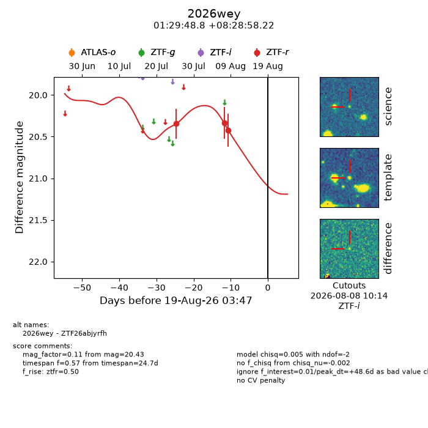
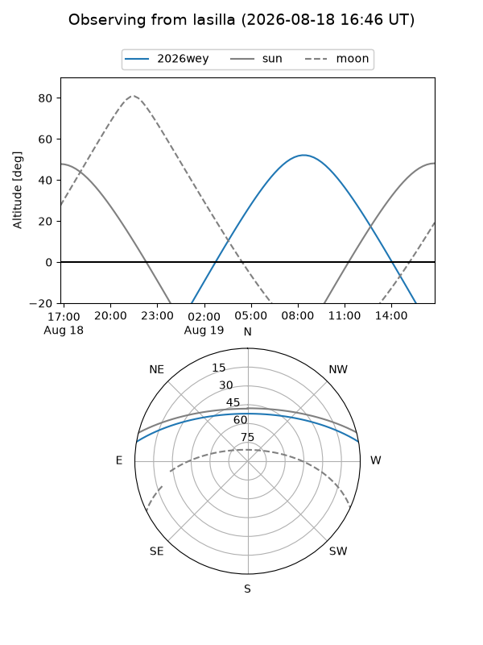
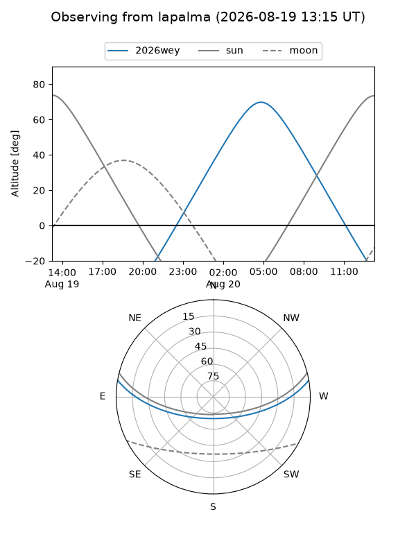
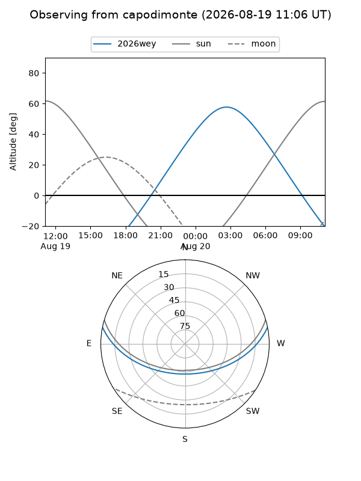
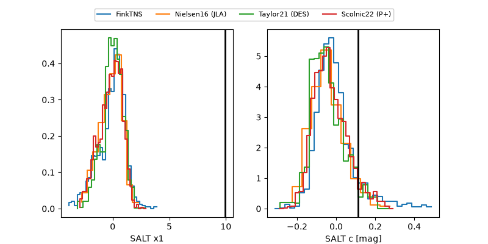

2026wey
Target 2026wey at 2026-08-19 14:32
Aliases and brokers:
FINK-ZTF: ztf.fink-portal.org/ZTF26abjyrfh
Lasair-ZTF: lasair-ztf.lsst.ac.uk/objects/ZTF26abjyrfh
ALeRCE-ZTF: alerce.online/object/ZTF26abjyrfh
YSE-PZ: ziggy.ucolick.org/yse/transient_detail/2026wey
TNS name: wis-tns.org/object/2026wey
Direct TNS query: direct search
alt names
ZTF26abjyrfh (ztf,fink_ztf)
2026wey (tns,yse)
Coordinates:
equatorial (ra, dec) = 22.4534,+8.48284
equatorial (HMS+DMS) = 01:29:48.82,+08:28:58.22
galactic (l, b) = (138.9028,-53.19476)
Flags:
TNS type: nan
peak dt: +49.1
Photometry:
last ztfr=20.43
3 ztfr detections
Lightcurve

Visibility



Additional plots
